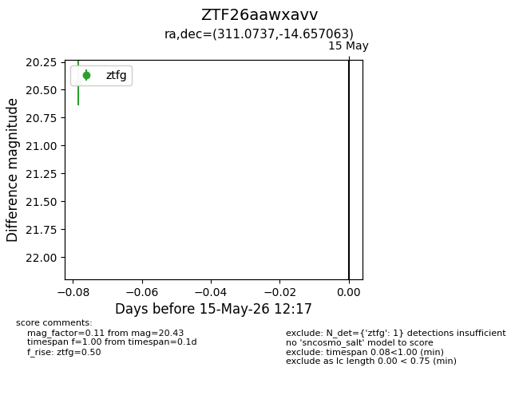
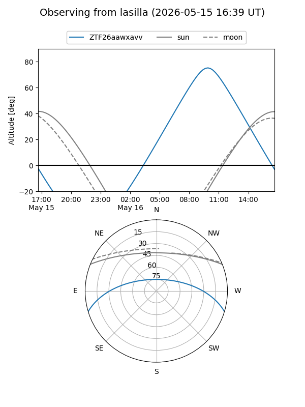
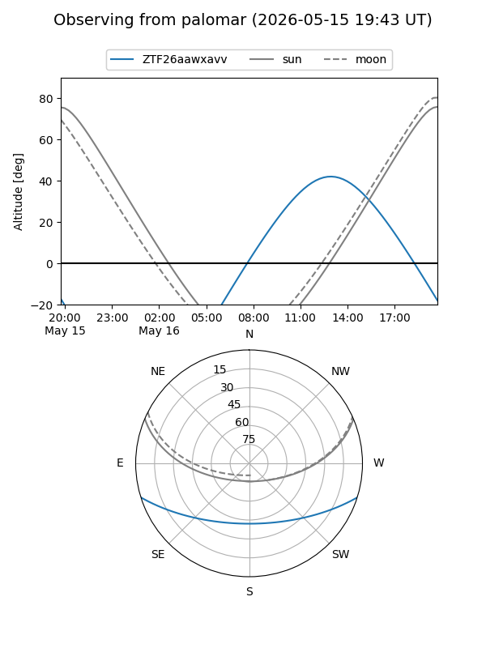

ZTF26aawxavv
Target ZTF26aawxavv at 2026-05-15 12:19
Aliases and brokers:
FINK: link
Lasair: link
ALeRCE: link
alt names
ZTF26aawxavv (ztf,fink_ztf)
Coordinates:
equatorial (ra, dec) = 311.0737,-14.65706
equatorial (HMS+DMS) = 20:44:17.69,-14:39:25.43
galactic (l, b) = (31.8140,-31.49646)
Flags:
Photometry:
last ztfg=20.43
1 ztfg detections
Lightcurve

Visibility


Additional plots